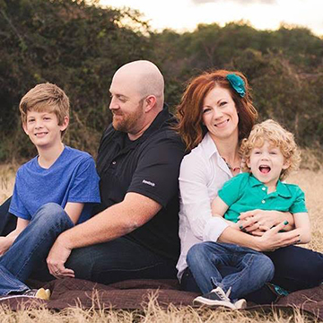

Hi, I am Barbara Baird. I am a wife and mother of 2 beautiful girls. I have a passion for all things
crafty, I think this started when I was young and started sewing with my grandma. When I got married my mother-in-law taught me how to make and paint ceramics, and also introduced me to scrapbooking, from here I just kept adding to my every growing list of hobbies. It was some of my friends who got me to start my business. I enjoy creating all different types of things, I will have to say card making and scrapbooking are probably my most favorite two.
I love to bring joy into other peoples lives with the things that I create.

Hi there, my name is Donna Christian. My husband Ryan and I have two boys and we live in Pflugerville. Some of my earliest childhood memories are of knitting and sewing with my mom so I grew up surrounded by handmade crafty things. I enjoy paper based crafts including scrapbooking, creative planning and card making but my most favorite artistic expression is bible journaling. It's made His Word come alive for me in a very profound way. There's just something about adding a colorful backdrop to my bible that makes it click for me. I've recently started dabbling in mixed media and canvas painting as well. In all these things, my aim is to worship Him, our beautiful creative God!
We meet throught CrossFit Tx about 3 years ago and became fast friends. It wasn't until a ladies event at church that we discoved we had more in common than just CrossFit. We love to get together for any reason especially to craft. We are also in the process of starting a Women's Crafting minestry at our church.